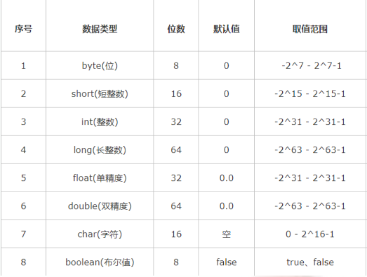

Java语言的特点和特性
Java语言的主要特点
跨平台性
所谓的跨平台性，是指软件可以不受计算机硬件和操作系统的约束而在任意计算机环境下正常运行。这是软件发展的趋势和编程人员追求的目标。之所以这样说，是因为计算机硬件的种类繁多，操作系统也各不相同，不同的用户和公司有自己不同的计算机环境偏好，而软件为了能在这些不同的环境里正常运行，就需要独立于这些平台。而在Java语言中，Java自带的虚拟机很好地实现了跨平台性。Java源程序代码经过编译后生成二进制的字节码是与平台无关的，但是可被Java虚拟机识别的一种机器码指令。 Java虚拟机提供了一个字节码到底层硬件平台及操作系统的屏障，使得Java语言具备跨平台性。
Java字节码是Java虚拟机执行的一种指令格式，具体的可以看维基百科
面向对象
面向对象是指以对象为基本粒度，其下包含属性和方法。对象的说明用属性表达，而通过使用方法来操作这个对象。面向对象技术使得应用程序的开发变得简单易用，节省代码。Java是一种面向对象的语言，也继承了面向对象的诸多好处，如代码扩展、代码复用等。
安全性
安全性可以分为四个层面，即语言级安全性、编译时安全性、运行时安全性、可执行代码安全性。语言级安全性指Java的数据结构是完整的对象，这些封装过的数据类型具有安全性。编译时要进行Java语言和语义的检查，保证每个变量对应一个相应的值，编译后生成Java类。运行时Java类需要类加载器载入www jxzxmr net，并经由字节码校验器校验之后才可以运行。 Java类在网络上使用时，对它的权限进行了设置，保证了被访问用户的安全性。
多线程
多线程在操作系统中已得到了最成功的应用。多线程是指允许一个应用程序同时存在两个或两个以上的线程，用于支持事务并发和多任务处理。 Java除了内置的多线程技术之外，还定义了一些类、方法等来建立和管理用户定义的多线程。
简单易用
Java源代码的书写不拘泥于特定的环境，可以用记事本、文本编辑器等编辑软件来实现，然后将源文件进行编译，编译通过后可直接运行，通过调试则可得到想要的结果。
Java语言的几大特性
封装
封装是把过程和数据包围起来，对数据的访问只能通过已定义的接口。面向对象计算始于这个基本概念，即现实世界可以被描绘成一系列完全自治、封装的对象，这些对象通过一个受保护的接口访问其他对象。封装是一种信息隐藏技术，在java中通过关键字private，protected和public实现封装。什么是封装？封装把对象的所有组成部分组合在一起，封装定义程序如何引用对象的数据，封装实际上使用方法将类的数据隐藏起来，控制用户对类的修改和访问数据的程度。 适当的封装可以让程式码更容易理解和维护，也加强了程式码的安全性。
继承
继承是面向对象最显著的一个特性。继承是从已有的类中派生出新的类，新的类能吸收已有类的数据属性和行为，并能扩展新的能力。 Java继承是使用已存在的类的定义作为基础建立新类的技术，新类的定义可以增加新的数据或新的功能，也可以用父类的功能，但不能选择性地继承父类。这种技术使得复用以前的代码非常容易，能够大大缩短开发周期，降低开发费用
多态
按字面的意思就是“多种状态”。在面向对象语言中，接口的多种不同的实现方式即为多态。多态性是允许你将父对象设置成为一个或更多的他的子对象相等的技术，赋值之后，父对象就可以根据当前赋值给它的子对象的特性以不同的方式运作多态的话，我觉得是更好的利用了继承这一特性，然后为什么能实现多态，因为可以重写父类的方法。说重写可能不清楚，具体来说就是子类父类可以存在分别存在名字相同的属性或者方法，然后可视声明的类去调用相应的方法等。
多态是同一个行为具有多个不同表现形式或形态的能力。多态就是同一个接口，使用不同的实例而执行不同操作.多态存在的三个必要条件
- 继承
- 重写
- 父类引用指向子类对象
这个时候有个问题子类继承父类，子类的所有构造函数中的第一行，其实都有一条隐身的语句super()；默认调用父类的无参构造函数。若父类中没有空参数的构造函数，那么子类的构造函数内，必须通过super语句指定要访问的父类中的构造函数，否则会报错。
多态通常有两种实现方法：
- 子类继承父类
- 类实现接口要使用多态，在声明对象时就应该遵循一条法则：声明的总是父类类型或接口类型，创建的是实际类型。多态最大的用途我认为在于对设计和架构的复用更进一步来说，设计模式中提倡的针对接口编程而不是针对实现编程就是充分利用多态的典型例子。定义功能和组件时定义接口，实现可以留到之后的流程中。同时一个接口可以有多个实现，甚至于完全可以在一个设计中同时使用一个接口的多种实现
底层的原理可以看下面的介绍
抽象
抽象是通过分析与综合的途径，运用概念在人脑中再现对象的质和本质的方法，我觉得理解成一种方法比较好。就是我们通过对事物的认知，将某一或者一类事物的属性变化成JAVA语言能识别的类。
Java和c++有哪些区别
Java为解释性语言，运行过程为由编译器将Java代码转换为字节码，然后由虚拟机解释执行。C/C++为编译型语言，源代码经过编译和链接生成可执行的二进制代码。因此，Java的执行速度比C/C++慢，但是Java能跨平台，C/C++不行。Java为纯面向对象语言，所有代码必须在类中实现，C/C++兼具面向对象和面向过程的特点，可以定义全局变量和函数。- 与
C/C++语言相比，Java语言中没有指针的概念，这有效防止了C/C++语言中操作指针可能引起的系统问题，从而使程序变得安全。 Java没有多重继承，但是Java语言引入了接口的概念，可以同时实现多个接口，达到C++中多重继承的目的。- 在
C++中，需要开发人员管理对内存的分配（包括申请与释放），而Java语言提供了垃圾回收器来实现垃圾的自动回收。 Java具有平台无关性，C++没有。- 还有一些语言特性。包括运算符重载，预处理，默认函数参数，
goto语句，自动强制转换等语言本身特性不同。
类，内部类，抽象类，接口
类
类是一个模板，它描述一类对象的行为和状态。包含局部变量，成员变量，类变量，类方法。
内部类
有四种常见的类型：成员内部类、局部内部类、匿名内部类和静态内部类。
成员内部类
定义为另一个类的里面
1 | class Circle { |
成员内部类可以无条件访问外部类的所有成员属性和成员方法（包括private成员和静态成员）。外部类中如果要访问成员内部类的成员，必须先创建一个成员内部类的对象，再通过指向这个对象的引用来访问。
同时需要注意当成员内部类拥有和外部类同名的成员变量或者方法时，会发生隐藏现象，即默认情况下访问的是成员内部类的成员，如果要访问外部类的同名成员，需要以下面的形式进行访问：
1 | 外部类.this.成员变量 |
局部内部类
局部内部类是定义在一个方法或者一个作用域里面的类，它和成员内部类的区别在于局部内部类的访问仅限于方法内或者该作用域内。
1 | class People{ |
局部内部类就像是方法里面的一个局部变量一样，是不能有public、protected、private以及static修饰符的。
匿名内部类
大部分匿名内部类用于接口回调。
静态内部类
静态内部类也是定义在另一个类里面的类，但是在类的前面多了一个关键字static。它是不需要不需要依赖于外部类的，它可以因为在没有外部类的对象的情况下，可以创建静态内部类的对象，也因此它不能使用外部类的非static成员变量或者方法。
1 | public class Test { |
局部内部类和匿名内部类只能访问局部final变量
如果局部变量的值在编译期间就可以确定，则直接在匿名内部里面创建一个拷贝。如果局部变量的值无法在编译期间确定，则通过构造器传参的方式来对拷贝进行初始化赋值，这样就会出现数据不一致的情况的发生。
抽象类
抽象类是用来捕捉子类的通用特性的 。它不能被实例化。抽象方法可以继承一个类和实现多个接口。子类使用extends 关键字来继承抽象类。
接口
接口是抽象方法的集合。如果一个类实现了某个接口，那么它就继承了这个接口的抽象方法，如果实现了这个接口，那么就必须确保使用这些方法。接口只是一种形式，接口自身不能做任何事情。且接口方法默认修饰符是public。你不可以使用其它修饰符。接口只可以继承一个或多个其它接口。子类使用关键字 implements 来实现接口。
接口和抽象类的区别
- 抽象类可以有默认的方法实现完全是抽象的。接口根本不存在方法的实现。
- 抽象类使用extends关键字来继承抽象类，子类使用关键字implements来实现接口
- 抽象类可以有构造器，而接口不能有构造器
- 抽象方法可以有 public、protected 和 default 这些修饰符，接口方法默认修饰符是 public。你不可以使用其它修饰符。
抽象类与普通类的区别
- 普通类可以去实例化调用；抽象类不能被实例化，因为它是存在于一种概念而不非具体。
- 普通类和抽象类都可以被继承，但是抽象类被继承后子类必须重写继承的方法，除非自类也是抽象类。
Java访问修饰符
- default (即缺省，什么也不写）: 在同一包内可见，不使用任何修饰符。使用对象：类、接口、变量、方法。
- private : 在同一类内可见。使用对象：变量、方法。 注意：不能修饰类（外部类）
- public: 对所有类可见。使用对象：类、接口、变量、方法
- protected: 对同一包内的类和所有子类可见。使用对象：变量、方法。 注意：不能修饰类（外部类）。
this关键字和super关键字
this 关键字指向的是当前对象的引用，this() 访问本类的构造方法，() 中可以有参数的 如果有参数 就是调用指定的有参构造。
注意事项：this() 不能使用在普通方法中 只能写在构造方法中；必须是构造方法中的第一条语句
super 在一个类中用来引用其父类的成员，它是在子类中访问父类成员的一个桥梁，并不是任何一个对象的引用。作用在于当子类中覆盖了父类的某个成员变量，或者重写了父类的某个成员方法时还能够访问到父类的成员变量和成员方法。
super.getClass() 和 this.getClass() 返回的都是 new 对象时指定的类
Object类
Object 类是类层次结构的根，Java 中所有的类从根本上都继承自这个类。Object 类是 Java 中其他所有类的祖先，位于 java.lang 包中。
getClass 方法
getClass 方法是一个 final 方法，不允许子类重写，并且也是一个 native 方法。
hashCode 方法
hashCode方法也是一个native方法。该方法返回对象的哈希码，一个对象没有被改变的前提下，无论这个对象被调用多少次，hashCode方法都会返回相同的整数值。
equals 方法
比较两个对象是否相等。如果重写了 equals 方法，通常有必要重写 hashCode 方法。
因为如果 2 个对象使用 equals 方法进行比较并且相同的话，那么这 2 个对象的 hashCode 方法的值也必须相等。如果2个对象的 equals 方法相等，那么他们的 hashCode 值也必须相等，反之，如果 2 个对象 hashCode 值相等，但是 equals 不相等，这样会影响性能，所以还是建议 2 个方法都一起重写。举例 HashMap，如果只重写了equals 方法，而不重写 hashcode，可能会导致 HashMap 中存在两个 key 值相同的元素
toString 方法
Object 对象的默认实现，即输出类的名字 @ 实例的哈希码的 16 进制。
== 和 equals 的区别是什么？
直接使用 == 操作符，比较的是两个字符串的引用地址，并不是比较内容，比较内容请用 equals()。
== 对于基本类型来说是值比较，对于引用类型来说是比较的是引用；而 equals 默认情况下是引用比较，只是很多类重新了 equals 方法，比如 String、Integer 等把它变成了值比较，所以一般情况下 equals 比较的是值是否相等。
若对一个类不重写，它的equals()方法是如何比较的
比较是对象的地址
基本数据类型

注意：String 不属于基础类型，它属于对象。
自动装箱和自动拆箱
自动装箱是 Java 编译器在基本数据类型和对应的对象包装类型之间做的一个转化。比如：把 int 转化成 Integer，double 转化成 Double，等等。反之就是自动拆箱。
Java 中Long 与 double 操作并不是原子的
在 java 的部分执行环境中，对于 long 以及 double 的操作并不是原子的。 当今所知的虚拟机对这条规则的实现都是把 32 位值做为原子性对待，而不是 64 位做为原子性。那么，当线程把主存中的 long/double 类型的值读到线程内存中时，可能是两次 32 位值的写操作，显而易见，如果几个线程同时操作，那么就可能会出现高低 2 个 32位值出错的情况发生，所以现在，java 程序必须确保通过同步来操作共享的 long 和 double。
比方说有一个 long 类型的 longfield 字段，某个线程正在执行: longfield = 123L ;
这样的指定操作，而同时有另一个线程正在执行：longfield = 456L;
这样的指定操作。之后 longfield 的值会是什么，是无法保证的。也许是 123L,也可能是 456L，或许是 0L,甚至还可能是 31415926L。
String
Java 中 String 是一个不可变类，即创建一个 String 对象后，是不能直接改变字符串中的某个字符的。
为什么不可变？好处在哪？
因为用于存储 String 值的仍然是一个 char 型数组，并且注意到它是 final 修饰的，不可更改。
- 效率（因为对象不可变，所以可以使用常量池的方式优化效率；因为对象不可变，所以 String 对象可以自身缓存 HashCode）
- 安全（String 被许多的 Java 类(库)用来当做参数,例如 网络连接地址 URL,文件路径 path,还有反射机制所需要的 String 参数等, 假若 String 不是固定不变的,将会引起各种安全隐患）
String 常量池
对于不可变对象使用 String 常量池，不然修改变量 string1 的值，string2 的值也发生变化了。常量池的存在无疑大大降低了创建、拷贝等操作的时间复杂度和空间复杂度。
1 | String s1="ab"+“cd”; |
由答案可以知道：String类确实是不可变类，"ab"+"cd"被当做了新字符串而不是续接"ab"（不然"ab"和"abc"肯定不会地址一样）；常量池确实存在，同是"abcd"，所有对"abcd"的引用都指向同一地址；如果使用new的话就会直接分配新的地址。
String， Stringbuffer， StringBuilder 的区别。
- String 字符串常量(final 修饰，不可被继承)，线程不安全，String 是常量，当创建之后即不能更改。(可以通过 StringBuffer 和 StringBuilder 创建 String 对象(常用的两个字符串操作类)。)
- StringBuffer 字符串变量（线程安全）其 toString 方法会进行对象缓存，以减少元素复制开销，支持同步锁。
- StringBuilder 字符串变量（非线程安全）其 toString 的时候，会直接返回一个新对象。
String的拼接
- 加号
- concat 方法
- StringBuilder（或StringBuffer）的 append 方法
编译器对字符串的加号做了优化，它会使用 StringBuilder 的 append 方法进行追加，而它最终通过 toString 方法转换成 String 字符串
1 | String str = "My name is " + "JTZen9"; |
对于 concat 整体是一个数组的拷贝，虽然在内存中是处理都是原子性操作，速度非常快，但是，最后的 return 语句创建一个新 String 对象，也就是每次 concat 操作都会创建一个新的 String 对象，源码看这
append 方法都在做字符数组的处理，加长，拷贝等，这些都是基本的数据处理，整个方法内并没有生成对象。只是最后 toString 返回一个对象而已。
int 和Integer
区别
int是一个基本数据类型，而Integer是int的包装类。Integer变量必须要实例化之后才能使用。Integer实际是对象的引用，当new一个Integer时，实际上是生成一个指针指向此对象；而int则是直接存储数据值 。Integer的默认值是null，int的默认值是0。
比较
- 两个
int的比较，就不用说了，就平常的数值比较即可。 - 两个
new生成的Integer比较，由于Integer变量实际上是对一个Integer对象的引用，所以两个通过new生成的Integer变量永远是不相等的（因为new生成的是两个对象，其内存地址不同）。调用equals函数返回true。 Integer变量和int变量比较时，只要两个变量的值是向等的，则结果为true（因为包装类Integer和基本数据类型int比较时，java会自动拆包装为int，然后进行比较，实际上就变为两个int变量的比较）- 对于两个非
new生成的Integer对象，进行比较时，如果两个变量的值在区间-128到127之间，则比较结果为true，如果两个变量的值不在此区间，则比较结果为false。调用equals函数返回true。 - 非
new生成的Integer变量和new Integer()生成的变量比较时，结果为false。（因为非new生成的Integer变量指向的是java常量池中的对象，而new Integer()生成的变量指向堆中新建的对象，两者在内存中的地址不同）
Integer常量池
Integer i = value;如果i是在-128到127之间，不会去堆中创建对象，而是直接返回IntegerCache中的值;如果值不在上面范围内则会从堆中创建对象。=走的是valueOf()方法,valueOf(int)会走缓存。Integer i2 = new Integer(xxxx);不管参数的value是多少都会从堆中创建对象，与IntegerCache没关系。
常量池都是放在方法区的。
Static关键字
static 方法就是没有 this 的方法。在 static 方法内部不能调用非静态方法，反过来是可以的。而且可以在没有创建任何对象的前提下，仅仅通过类本身来调用 static 方法。这实际上正是 static 方法的主要用途，只要类被加载了，就可以通过类名去进行访问。
static 方法一般称作静态方法，由于静态方法不依赖于任何对象就可以进行访问，因此对于静态方法来说，是没有this 的，因为它不依附于任何对象，既然都没有对象，就谈不上 this 了。并且由于这个特性，在静态方法中不能访问类的非静态成员变量和非静态成员方法，因为非静态成员方法/变量都是必须依赖具体的对象才能够被调用。
static 变量也称作静态变量，静态变量和非静态变量的区别是：静态变量被所有的对象所共享，在内存中只有一个副本，它当且仅当在类初次加载时会被初始化。而非静态变量是对象所拥有的，在创建对象的时候被初始化，存在多个副本，各个对象拥有的副本互不影响。
static关键字还有一个比较关键的作用就是 用来形成静态代码块以优化程序性能。static块可以置于类中的任何地方，类中可以有多个static块。在类初次被加载的时候，会按照 static 块的顺序来执行每个 static 块，并且只会执行一次。
Final关键字
修饰类当用 final 去修饰一个类的时候，表示这个类不能被继承。注意：
a. 被 final 修饰的类，final 类中的成员变量可以根据自己的实际需要设计为 fianl。
b. final 类中的成员方法都会被隐式的指定为 final 方法。
被 final 修饰的方法不能被重写：
a. 一个类的 private 方法会隐式的被指定为 final 方法。
b. 如果父类中有 final 修饰的方法，那么子类不能去重写。
修饰成员变量，必须要赋初始值，而且是只能初始化一次。
对于值类型，final 修饰指的是值不可变，对于引用类型，则是引用不可变，也就是内存地址不可变。
类初始化顺序
- 非继承关系中的初始化顺序：
static静态代码块和静态成员 -> 普通成员 -> 构造函数执行 - 继承的子类：父类静态代码块和静态成员 -> 子类静态代码块和静态成员 ->父类普通成员和非
static块 -> 父类构造函数 -> 子类普通成员和非static块 -> 子类构造函数 。
Java的容器和容器原理以及之间的区别
Java 容器分为 Collection 和 Map 两大类

ArrayList实现原理
- ArrayList 是 List 接口的可变数组非同步实现，并允许包括 null 在内的所有元素。
- 底层使用数组实现
- 该集合是可变长度数组，数组扩容时，会将老数组中的元素重新拷贝一份到新的数组中，每次数组容量增长大约是其容量的 1.5 倍，这种操作的代价很高。
- 采用了 Fail-Fast 机制
- remove 方法会让下标到数组末尾的元素向前移动一个单位，并把最后一位的值置空，方便 GC
LinkedList实现原理
- LinkedList 是 List 接口的双向链表非同步实现，并允许包括 null 在内的所有元素。
- 底层的数据结构是基于双向链表的，该数据结构我们称为节点
- 双向链表节点对应的类 Node 的实例，Node 中包含成员变量：prev，next，item。其中，prev 是该节点的上一个节点，next 是该节点的下一个节点，item 是该节点所包含的值。
- 它的查找是分两半查找，先判断 index 是在链表的哪一半，然后再去对应区域查找，这样最多只要遍历链表的一半节点即可找到
ArrayList 和 LinkedList 区别
ArrayList 和 LinkedList 都是实现了 List 接口的容器类，用于存储一系列的对象引用。他们都可以对元素的增删改查进行操作。
ArrayList 是实现了基于动态数组的数据结构，LinkedList 是基于链表结构。
ArrayList 可以以 O(1) 时间复杂度对元素进行随机访，LinkedList 则是 O(n) 的复杂度。
新增和删除操作 add 和 remove，LinkedList 时间复杂度为 O(1)，而 ArrayList 为 O(n)，因为要移动数据。对ArrayList 和 LinkedList 而言，在列表末尾增加一个元素所花的开销都是固定的都是 O(1)。LinkedList 比 ArrayList 更占内存，因为 LinkedList 为每一个节点存储了两个引用，一个指向前一个元素，一个指向下一个元素。
ArrayList 并发 add() 可能出现数组下标越界异常。
ArrayList 和 Vector 的区别
- 线程安全：Vector 在 add 的时候使用了 Synchronized 来实现线程同步，是线程安全的，而 ArrayList 是非线程安全的。
- 性能：ArrayList 在性能方面要优于 Vector。
- 扩容：ArrayList 和 Vector 都会根据实际的需要动态的调整容量，只不过在 Vector 扩容每次会增加 1 倍，而ArrayList 只会增加 50%。
实现数组和 List 之间的转换
- 数组转 List：使用 Arrays. asList(array) 进行转换。
- List 转数组：使用 List 自带的 toArray() 方法。
三种方式访问集合中的元素
传统的for循环遍历
1 | for (int i = 0; i < list.size(); i++) { |
迭代器遍历
1 | Iterator iterator = list.iterator(); |
foreach循环遍历
1 | for (ElementType element : list) { |
ArrayList遍历删除会出的问题
for循环遍历list：删除某个元素后，list 的大小发生了变化，而你的索引也在变化，所以会导致你在遍历的时候漏掉某些元素。比如当你删除第 1 个元素后，继续根据索引访问第 2 个元素时，因为删除的关系后面的元素都往前移动了一位，所以实际访问的是第 3 个元素。因此，这种方式可以用在删除特定的一个元素时使用，但不适合循环删除多个元素时使用。解决方法是从后遍历
foreach 循环：删除元素后继续循环会报错误信息 ConcurrentModificationException，因为元素在使用的时候发生了并发的修改，导致异常抛出
iterator 遍历这种方式可以正常的循环及删除。但要注意的是，使用 iterator 的 remove 方法，如果用 list 的 remove 方法同样会报上面提到的 ConcurrentModificationException 错误。
添加也是上面分析情况。
具体原因：http://wiki.jikexueyuan.com/project/java-enhancement/java-thirtyfour.html
Map的排序
TreeMap：基于红黑树的 NavigableMap 实现，该映射根据其键的自然顺序进行排序，或者根据创建映射时提供的Comparator 进行排序，具体取决于使用的构造方法。
1 | import java.util.Comparator; |
我们需要根据TreeMap的value来进行排序。对value排序我们就需要借助于Collections的sort(List<T> list, Comparator<? super T> c)方法，该方法根据指定比较器产生的顺序对指定列表进行排序。但是有一个前提条件，那就是所有的元素都必须能够根据所提供的比较器来进行比较。
1 | import java.util.ArrayList; |
HashMap的值是没有顺序的，他是按照key的HashCode来实现的，那么它排序的方式和TreeMap的Value方式是一样的。
1 | public class HashMapTest { |
Set数据为什么是不重合
我们知道常用的Set实现类那就是HashSet了，查看HashSet的源码可以看到内部其实就是一个HashMap，因为HashMap在put一个Key时会判断，将要放进去的Key的hash值与 目前HashMap中定位到的那个Key的hash值比较。
如果hash值相当，继续比较 这两个对象的地址或者内容是否相当。
如果相当：判断出来要添加的Key与HashMap中的Key重复，把Value的值给替换成最新的。也就是理解的hashcode()和equals()的区别
Iterator和ListIterator的区别
Iterator 可用来遍历 Set 和 List 集合，但是 ListIterator 只能用来遍历List。
Iterator 对集合只能是前向遍历，ListIterator 既可以前向也可以后向。
ListIterator 实现了 Iterator 接口，并包含其他的功能，比如：增加元素，替换元素，获取前一个和后一个元素的索引，等等。
泛型
本质是为了参数化类型（在不创建新的类型的情况下，通过泛型指定的不同类型来控制形参具体限制的类型）。也就是说在泛型使用过程中，操作的数据类型被指定为一个参数，这种参数类型可以用在类、接口和方法中，分别被称为泛型类、泛型接口、泛型方法。
1 | List arrayList = new ArrayList(); |
毫无疑问，程序的运行结果会以崩溃结束：ArrayList可以存放任意类型，例子中添加了一个String类型，添加了一个Integer类型，再使用时都以String的方式使用，因此程序崩溃了。
注意：泛型只在编译阶段有效，在编译过程中，正确检验泛型结果后，会将泛型的相关信息擦出，并且在对象进入和离开方法的边界处添加类型检查和类型转换的方法。也就是说，泛型信息不会进入到运行时阶段。对此总结成一句话：泛型类型在逻辑上看以看成是多个不同的类型，实际上都是相同的基本类型。但是在在return之前，会根据泛型变量进行强转
泛型有三种使用方式，分别为：泛型类、泛型接口、泛型方法
反射
Java反射就是在运行状态中，对于任意一个类，都能够知道这个类的所有属性和方法；对于任意一个对象，都能够调用它的任意方法和属性；并且能改变它的属性。注意：使用反射机制可以打破封装性，导致了java对象的属性不安全。
反射的好处：可以更灵活的编写代码，代码可以在运行时装配，无需在组件之间进行源代码链接，降低代码的耦合度；还有动态代理的实现等等。
有三种得到class 方式：通过 Class 对象的forName()静态方法来获取；直接通过 类名.class的方式得到,该方法最为安全可靠；通过对象调用 getClass() 方法来获取。注意：一个类在JVM 中只会有一个class 实例，所以三种方法得到的class 的地址到最后都是相等的。
Throwable、error、exception的区别
异常本质上是程序上的错误，包括程序逻辑错误和系统错误。比如使用空的引用、数组下标越界、内存溢出错误等。Throwable 类是Java语言中所有错误或异常的超类。有两个重要的子类：Exception（异常）和 Error（错误），二者都是 Java 异常处理的重要子类，各自都包含大量子类。4
异常和错误的本质区别：异常能被程序本身处理，而错误无法处理。Error是可以catch的，而且也可以向常规Exception一样被处理，而且就算不捕捉的话也只是导致当前线程挂掉，其他线程还是可以正常运行，如果有需要的话捕捉Error之后也可以做些其他处理。但是Error是一种系统内部的错误，这种错误不像Exception一样是可能是程序和业务上的错误是可以恢复的。
怎么catch？catch throwable会把Error和其他继承Throwable的类捕捉到。而catch Exception只会捕捉Exception及其子类，捕捉的范围更小。
Error：是程序无法处理的错误，表示运行应用程序中较严重问题。大多数错误与代码编写者执行的操作无关，而表示代码运行时 JVM出现的问题。
异常的种类
主要是分为运行时异常和非运行异常
- Checked Exception（非 Runtime Exception）
- Unchecked Exception（Runtime Exception）
Java 中凡是继承自 Exception，而不继承自 RuntimeException 类的异常都是非运行时异常。所有非运行时异常都必须进行处理不然无法通过编译
- 算术异常类：
ArithmeticExecption - 空指针异常类：
NullPointerException - 类型强制转换异常：
ClassCastException - 数组负下标异常：
NegativeArrayException - 数组下标越界异常：
ArrayIndexOutOfBoundsException - 违背安全原则异常：
SecturityException - 文件已结束异常：
EOFException - 文件未找到异常：
FileNotFoundException - 字符串转换为数字异常：
NumberFormatException - 操作数据库异常：
SQLException - 输入输出异常：
IOException
Java反射
Java反射就是在运行状态中，对于任意一个类，都能够知道这个类的所有属性和方法；对于任意一个对象，都能够调用它的任意方法和属性；并且能改变它的属性。注意：使用反射机制可以打破封装性，导致了java对象的属性不安全。
好处
可以更灵活的编写代码，代码可以在运行时装配，无需在组件之间进行源代码链接，降低代码的耦合度；还有动态代理的实现等等。
实现方式
- 通过
Class对象的forName()静态方法来获取； - 直接通过 类名
.class的方式得到,该方法最为安全可靠； - 通过对象调用
getClass()方法来获取。
注意：一个类在JVM 中只会有一个class 实例，所以三种方法得到的class的地址到最后都是相等的。
常用API
getName()：获得类的完整名字；getDeclaredFields()：获得类的所有属性。包括private声明的和继承类；getMethods()：获得类的public类型的方法；
java创建线程的四种方式
继承Thread类创建线程类
- 定义
Thread类的子类，并重写该类的run方法，该run方法的方法体就代表了线程要完成的任务。因此把run()方法称为执行体。 - 创建
Thread子类的实例，即创建了线程对象。 - 调用线程对象的
start()方法来启动该线程。
1 | package com.thread; |
通过Runnable接口创建线程类
- 定义
runnable接口的实现类，并重写该接口的run()方法，该run()方法的方法体同样是该线程的线程执行体。 - 创建
Runnable实现类的实例，并依此实例作为Thread的target来创建Thread对象，该Thread对象才是真正的线程对象。 - 调用线程对象的
start()方法来启动该线程。
1 | package com.thread; |
通过Callable和Future创建线程
创建
Callable接口的实现类，并实现call()方法，该call()方法将作为线程执行体，并且有返回值。创建
Callable实现类的实例，使用FutureTask类来包装Callable对象，该FutureTask对象封装了该Callable对象的call()方法的返回值。使用
FutureTask对象作为Thread对象的target创建并启动新线程。调用
FutureTask对象的get()方法来获得子线程执行结束后的返回值
1 | package com.demo; |
通过线程池创建线程
线程实现callable接口和runnable接口的区别
Callable规定的方法是call(),Runnable规定的方法是run()Callable有返回值，Runnable没有返回值Runnable没有容错机制，意味着如果出现异常必须立即处理；Callable有容错机制，意味着出现异常之后可以向上抛出Runnable可以通过Thread来启动，也可以通过线程池的execute、submit来处理；Callable线程只能通过线程池的submit来处理
Java实现多线程
就是利用上面的四种方式实现多线程
线程中start和run的区别
总结一下：
start()可以启动一个新线程，run()不能start()不能被重复调用，run()可以start()中的run代码可以不执行完就继续执行下面的代码，即进行了线程切换。直接调用run方法必须等待其代码全部执行完才能继续执行下面的代码。start()实现了多线程，run()没有实现多线程。
start() :
它的作用是启动一个新线程。
通过start()方法来启动的新线程，处于就绪（可运行）状态，并没有运行，一旦得到cpu时间片，就开始执行相应线程的run()方法，这里方法run()称为线程体，它包含了要执行的这个线程的内容，run方法运行结束，此线程随即终止。start()不能被重复调用。用start方法来启动线程，真正实现了多线程运行，即无需等待某个线程的run方法体代码执行完毕就直接继续执行下面的代码。这里无需等待run方法执行完毕，即可继续执行下面的代码，即进行了线程切换。
run() :
run()就和普通的成员方法一样，可以被重复调用。
如果直接调用run方法，并不会启动新线程！程序中依然只有主线程这一个线程，其程序执行路径还是只有一条，还是要顺序执行，还是要等待run方法体执行完毕后才可继续执行下面的代码，这样就没有达到多线程的目的。
四种方式哪种更好一点
实现 Runnalbe 接口更好，使用实现 Runnable 接口的方式创建的线程可以处理同一资源，从而实现资源的共享。
如何停止JVM的一个线程
线程的终止有主动和被动之分，被动表示线程出现异常退出或者 run 方法执行完毕，线程会自动终止。主动的方式是 Thread.stop() 来实现线程的终止，但是 stop() 方法是一个过期的方法，因为它不会保证线程的资源正常释放相当于我们在 linux 上通过 kill -9 强制结束一个进程。
在 Java 中，停止一个线程的主要机制是中断，中断并不是强迫终止一个线程，它是一种协作机制，是给线程传递一个取消信号，但是由线程来决定如何以及何时退出。
正常的做法是在线程中维护了一个中断标识，通过 thread.interrupt() 方法去改变了中断标识的值，然后在 run() 方法中，while 循环中通过 Thread.currentThread().isInterrupted() 来判断线程中断的标识。
更细节的可以看Java线程的终止——interrupt
sleep()，wait()，yield()和join()方法
sleep()
sleep()方法需要指定等待的时间，它可以让当前正在执行的线程在指定的时间内暂停执行，进入阻塞状态，该方法既可以让其他同优先级或者高优先级的线程得到执行的机会，也可以让低优先级的线程得到执行机会。但是sleep()方法不会释放“锁标志”，也就是说如果有synchronized同步块，其他线程仍然不能访问共享数据。
wait()
wait()方法需要和notify()及notifyAll()两个方法一起介绍，这三个方法用于协调多个线程对共享数据的存取，所以必须在synchronized语句块内使用，也就是说，调用wait()，notify()和notifyAll()的任务在调用这些方法前必须拥有对象的锁。注意，它们都是Object类的方法，而不是Thread类的方法。
那如果使用的是ReenTrantLock实现同步，该如何达到这三个方法的效果呢？解决方法是使用ReenTrantLock.newCondition()获取一个Condition类对象，然后Condition的await()，signal()以及signalAll()分别对应上面的三个方法。
yield()
yield()方法和sleep()方法类似，也不会释放“锁标志”，区别在于，它没有参数，即yield()方法只是使当前线程重新回到可执行状态，所以执行yield()的线程有可能在进入到可执行状态后马上又被执行，另外yield()方法只能使同优先级或者高优先级的线程得到执行机会，这也和sleep()方法不同。
join()
join()方法会使当前线程等待调用join()方法的线程结束后才能继续执行。join()无参形式等价于join(0)，wait()类似。
sleep()与wait()的区别
- 这两个方法来自不同的类，sleep 是 Thread 类的方法，而 wait 是 Object 类的方法；
- 执行sleep方法后不会释放锁，而执行 wait 方法后会释放锁；
- wait，notify 和 notifyAll 只能在同步方法或同步代码块中调用，而sleep可以在任何地方调用；
- sleep必须捕获异常，而wait，notify和notifyAll不需要捕获异常。（如果不是在同步方法或同步代码块中调用wait() 方法，则抛出 IllegalMOnitorStateException，它是 RuntimeException 的一个子类，因此，不需要 try-catch 语句进行捕捉异常）
需要注意以下几点：
- 在执行 notify() 或 notifyAll() 方法后，当前线程不会马上释放该对象锁，需要等到 notify() 或 notifyAll() 方法所在的同步方法或同步代码块执行完成，当前线程才会释放锁。
- 在 sleep() 状态下 interrupt() 中断线程，会进入 catch 语句，并且清除停止状态值，使之变成 false。
- wait(long) 方法：如果线程在指定时间内未被唤醒，则自动唤醒。wait(0) 等价于 wait()。
- Thread.Sleep(0) 的作用是“触发操作系统立刻重新进行一次 CPU 竞争。
sleep()与 yield()的区别
sleep()方法给其他线程运行机会时不考虑其他线程的优先级，因此会给低优先级的线程运行的机会；yield()方法只会给相同优先级或更高优先级的线程运行的机会。- 线程执行
sleep()方法后转入阻塞（blocked）状态，而执行yield()方法后转入就绪（ready）状态。 sleep()方法声明抛出InterruptedException异常，而yield()方法没有声明任何异常。sleep()方法比yield()方法具有更好的可移植性（跟操作系统CPU调度相关）。sleep方法需要参数，而yield方法不需要参数。
wait 方法底层原理
输入一个URL回车之后的过程是什么，涉及到了哪些协议
个人感觉涉及到的协议有：HTTP，TCP，DNS，ARP这四个协议
DNS域名解析：我们在浏览器输入网址，其实就是要向服务器请求我们想要的页面内容，所有浏览器首先要确认的是域名所对应的服务器在哪里。将域名解析成对应的服务器IP地址这项工作，是由DNS服务器来完成的。客户端收到你输入的域名地址后，它首先去找本地的hosts文件，检查在该文件中是否有相应的域名、IP对应关系，如果有，则向其IP地址发送请求，如果没有，再去找DNS服务器。一般用户很少去编辑修改hosts文件。浏览器客户端向本地DNS服务器发送一个含有域名www.cnblogs.com的DNS查询报文。本地DNS服务器把查询报文转发到根DNS服务器，根DNS服务器注意到其com后缀，于是向本地DNS服务器返回comDNS服务器的IP地址。本地DNS服务器再次向comDNS服务器发送查询请求，comDNS服务器注意到其www.cnblogs.com后缀并用负责该域名的权威DNS服务器的IP地址作为回应。最后，本地DNS服务器将含有www.cnblogs.com的IP地址的响应报文发送给客户端。从客户端到本地服务器属于递归查询，而DNS服务器之间的交互属于迭代查询。正常情况下，本地DNS服务器的缓存中已有comDNS服务器的地址，因此请求根域名服务器这一步不是必需的- 建立
TCP连接； - 发送
HTTP请求； - 服务器处理请求；
- 返回响应结果；
- 关闭
TCP连接； - 浏览器解析
HTML； - 浏览器布局渲染；
Java是值传递还是引用传递
首先按值调用是表示方法接收的是调用者提供的值。而按引用调用表示方法接收的是调用者提供的变量地址。
java 里对象传递的时候，传递的都是引用（也就是对象的地址），这比传递整个对象高效的多。而基础类型，int，double 等传递的才是值。
但是当一个对象被当作参数传递给一个方法后，此方法可改变这个对象的属性，并可返回变化后的结果，那么这里到底是值传递还是引用传递：是值传递。Java 编程语言只有值传递参数。当一个对象实例作为一个参数被传递到方法中时，参数的值就是对该对象的引用。对象的内容可以在被调用的方法中改变，但对象的引用是永远不会改变的。
Java的null类型
理解一下null
1 | public class NULL { |
输出应该为 ：haha，因为null是可以强转为任何类类型的，所以前面（（NULL）null）是合法的，但是null强转以后是无效对象，其返回值为null
而haha方法是静态方法，静态方法使用静态绑定，不会抛出空指针异常。如果把haha()函数变为非静态之后将会抛出空指针异常。
Java语言中有两种类型，一种是基本类型还有一种是引用类型。还有一个特殊的null类型即表达式null的类型。null既不是对象也不是一种类型也不是java.lang.Object的实例，它仅仅是一个特殊的值。
因为null类型没有名字，所以不可能声明为null类型的变量或者转换为null类型。null引用是null类型表达式唯一可能的值。null引用可以转换为任意引用类型。
java创建对象时，new 出一个对象 和 = null的区别
看个例子解释：
(new ArrayList<String>).add(new String("hello"))，jvm只是把new String("hello")的地址存入到了列表list里面。String str = new String("Test")，是开辟内存放入了对象，并把它的引用赋给str。同理，BookInfo bookinfo=null与BookInfo bookinfo=new BookInfo()：前者，是声明了一个对象（的引用），jvm并没有开辟内存放入一个对象；而后者，在声明了一个对象的引用后，又把新开辟的没有存储任何有效值的对象的地址赋给了他。bookinfo=test.getinfo()，又把它指向了另一个地址= =也就是说原来开辟的内存并没有用，那就没有意义。但是java虚拟机自动垃圾回收机制会判断并回收内存的。
所以如果你的类在创建后，要自己读写数据，那就必须初始化；如果像Bookinfo那样，完全是为了从其他地方接收引用，也完全可以省了new吧。
空串与null串
空串””是长度为0的字符串它是一个java对象，有自己的串长度(0)和内容(空)。null串表示一个特殊的String变量，它表示目前没有任何对象与该变量关联。
System.out.println原理
System是java.lang包中的一个类，里面封装了一些系统相关的重要函数与变量。它其中类中的所有成员都是静态的，out是一个PrintStream类(java.io.PrintStream类)的对象
System.out.println性能并不好。当我们深入分析时，其调用顺序如下println - > print - > write（）+ newLine（）。这个顺序流是Sun / Oracle JDK的实现。write（）和newLine（）都包含synchronized块。同步有一点开销，但更多的是添加字符到缓冲区和打印的开销更大。所以一般都用日志。
一般打印对象的时候都会调用对象的toString()方法打印出这个函数的返回值，但是我们一般重写对象的toString()方法，按照自己的想法输出。
Java多态的底层原理
多态分为两种情况：编译时多态和运行时多态。如果在编译时能够确定执行多态方法中的哪一个，称为编译时多态，否则称为运行时多态。可以看这个博客，上面的示例很清楚：
https://blog.csdn.net/why_still_confused/article/details/51295707
多态的底层实现是动态绑定，即在运行时才把方法调用与方法实现关联起来。动态绑定涉及很多JVM 的细节。JVM 的方法调用指令有五个，分别是：
invokestatic：调用静态方法；invokespecial：调用实例构造器<init>方法、私有方法和父类方法；invokevirtual：调用虚方法；invokeinterface：调用接口方法，运行时确定具体实现；invokedynamic：运行时动态解析所引用的方法，然后再执行，用于支持动态类型语言。
其中，invokestatic 和invokespecial用于静态绑定，invokevirtual和invokeinterface 用于动态绑定。可以看出，动态绑定主要应用于虚方法和接口方法。
多态的实现过程，就是方法调用动态分派的过程，通过栈帧的信息去找到被调用方法的具体实现，然后使用这个具体实现的直接引用完成方法调用。
以 invokevirtual 指令为例，在执行时，大致可以分为以下几步：
- 先从操作栈中找到对象的实际类型
class； - 找到
class中与被调用方法签名相同的方法，如果有访问权限就返回这个方法的直接引用，如果没有访问权限就报错java.lang.IllegalAccessError； - 如果第 2 步找不到相符的方法，就去搜索
class的父类，按照继承关系自下而上依次执行第 2 步的操作； - 如果第 3 步找不到相符的方法，就报错
java.lang.AbstractMethodError
Java中创建对象的5种方式
使用new关键字 |
} → 调用了构造函数 |
|---|---|
使用Class类的newInstance方法 |
} → 调用了构造函数 |
使用Constructor类的newInstance方法 |
} → 调用了构造函数 |
使用clone方法 |
} → 没有调用构造函数 |
| 使用反序列化 | } → 没有调用构造函数 |
使用new关键字
通过这种方式，我们可以调用任意的构造函数(无参的和带参数的)
使用Class类的newInstance方法
这个newInstance方法调用无参的构造函数创建对象
使用Constructor类的newInstance方法
和Class类的newInstance方法很像，java.lang.reflect.Constructor类里也有一个newInstance方法可以创建对象。我们可以通过这个newInstance方法调用有参数的和私有的构造函数。这两种newInstance方法就是大家所说的反射。
使用clone方法
无论何时我们调用一个对象的clone方法，jvm就会创建一个新的对象，将前面对象的内容全部拷贝进去。用clone方法创建对象并不会调用任何构造函数。
要使用clone方法，我们需要先实现Cloneable接口并实现其定义的clone方法。
使用反序列化
当我们序列化和反序列化一个对象，jvm会给我们创建一个单独的对象。在反序列化时，jvm创建对象并不会调用任何构造函数。为了反序列化一个对象，我们需要让我们的类实现Serializable接口
方法覆盖和方法重载
Java 中的方法重载发生在同一个类里面两个或者是多个方法的方法名相同但是参数不同的情况。与此相对，方法覆盖是说子类重新定义了父类的方法。方法覆盖必须有相同的方法名，参数列表和返回类型。覆盖者可能不会限制它所覆盖的方法的访问。Java 中 static 方法不能被覆盖，因为方法覆盖是基于运行时动态绑定的，而 static 方法是编译时静态绑定的。
为什么会出现 4.0-3.6=0.40000001 这种现象
简单来说是这样：2 进制的小数无法精确的表达 10 进制小数，计算机在计算 10 进制小数的过程中要先转换为 2 进制进行计算，这个过程中出现了误差。
十进制的数在内存中是怎么存的
补码的形式
多级缓存
Guava 本地缓存以及 Redis 缓存